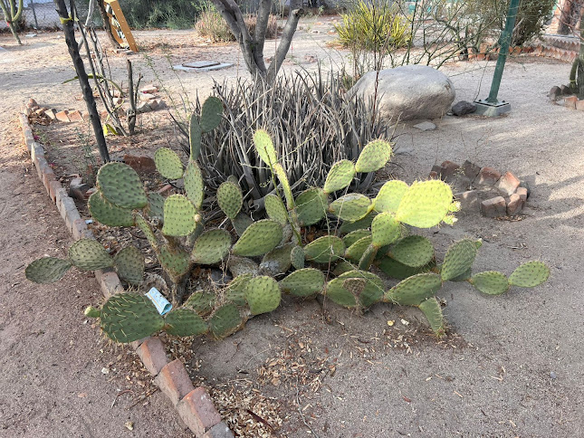
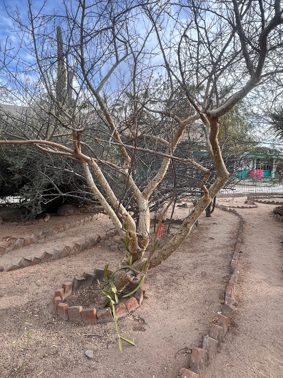
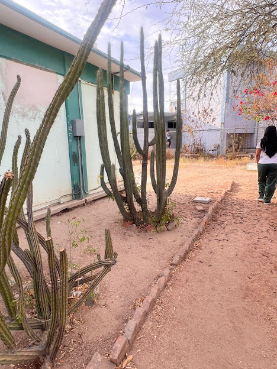
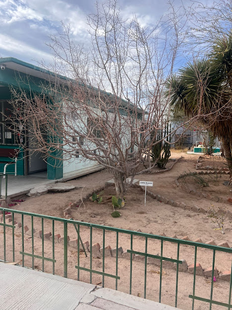
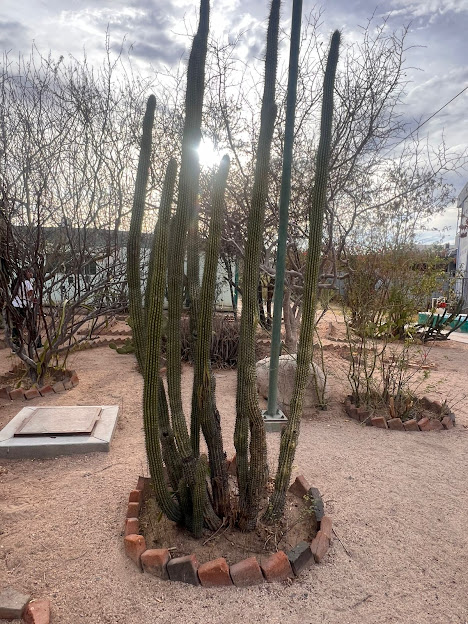
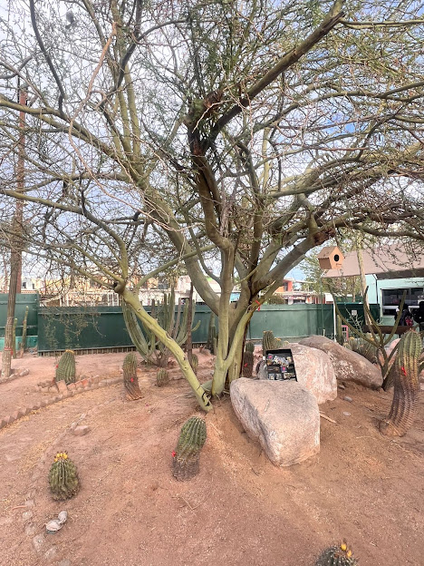

Nopal
El nopal (Opuntia ficus-indica) es un tipo de cactus originario de México, fundamental en su cultura y gastronomía. Sus pencas carnosas (hojas) se consumen como verdura, y también produce un fruto muy apreciado llamado tuna o higo chumbo. Es ampliamente valorado tanto por su sabor como por su gran resistencia y beneficios nutricionales
Palo verde
El palo verde (cuyo nombre científico es Parkinsonia aculeata) es un árbol de clima árido originario de América. Es famoso por su corteza y ramas de color verde brillante, capaces de realizar la fotosíntesis incluso sin hojas, y por sus espectaculares floraciones amarillas.

Torote
El término torote suele referirse a un género de árboles y arbustos suculentos (Bursera) originarios del noroeste de México. Son conocidos por su corteza resinosa y aromática.

Pitaya
La pitahaya o fruta del dragón es un fruto exótico proveniente de diversas especies de cactus. Se caracteriza por su piel brillante, su pulpa suave con pequeñas semillas comestibles y su alto contenido nutricional (vitamina C, hierro y antioxidantes).

Copal Blanco
El copal blanco (Bursera bipinnata) es una resina natural sagrada originaria de Mesoamérica, muy valorada desde la época prehispánica por su aroma limpio, cítrico y terroso. Su uso principal es la purificación energética y espiritual, además de contar con propiedades medicinales y terapéuticas

Pitaya dulce
La pitaya dulce (Stenocereus thurberi) es un fruto del desierto. Es altamente valorada en el noroeste de México por su sabor dulce y propiedades nutricionales.
Palo Verde
El árbol palo verde (Parkinsonia aculeata) es una especie nativa de zonas áridas y semiáridas de América. Es muy valorado en reforestación y jardinería por su extrema resistencia a la sequía y su espectacular floración amarilla.

Nopal
El nopal (Opuntia ficus-indica) es un cactus originario de México famoso por su enorme resistencia y valor nutricional. Representa un pilar de la gastronomía y cultura mexicana, siendo valorado tanto por sus tallos (nopalitos) como por su fruto dulce conocido como tuna.
Pitaya dulce
Pitayo dulce es una especie de planta fanerógama de la familia Cactaceae. Es endémica de Norteamérica. Crece de 1 a 8 m en varias ramas columnares en forma de árbol y con flores de color rosado. Los frutos son comestibles de color rojo